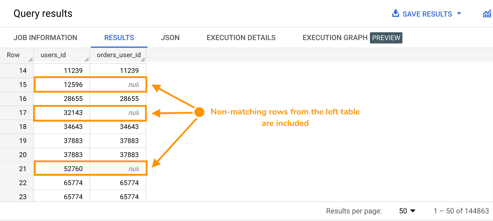
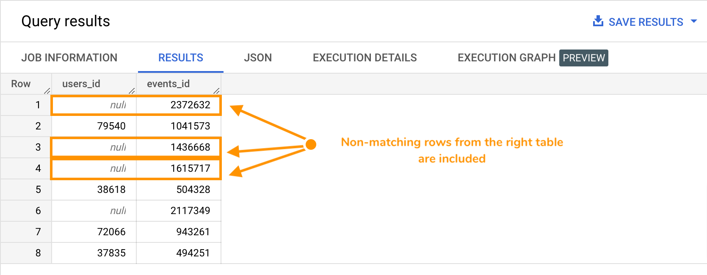

Image credits: GermanX, CC BY-SA 4.0
Image credits: GermanX, CC BY-SA 4.0
A LEFT OUTER JOIN, or simply LEFT JOIN, is a type of JOIN where matching rows, AND non-matching rows from the left table, are combined with matching rows, and only matching rows from the right table to create a new table. The non-matching rows in the right table are ignored.
The matching is usually done using an identifier column that's present in both tables. For example, rows where table_1.primary_key_x = table_2.foreign_key_x.
The syntax looks like this: SELECT column A, column B, ..., column N FROM table_1 LEFT JOIN table_2 ON matching_set_of_conditions.
RIGHT OUTER JOIN, or simply RIGHT JOIN, follows the same logic in reverse. It's not often used since you can accomplish the same results by switching the order of the tables in your LEFT JOIN.
👉 Check out Visual JOIN to see a visual representation of how it works.
Now observe carefully the results of the following queries.
Type the query below in the BigQuery console and run it. Don't copy paste. 😉
SELECT users.id AS users_id, orders.user_id AS orders_user_id
FROM bigquery-public-data.thelook_ecommerce.users
LEFT JOIN bigquery-public-data.thelook_ecommerce.orders
ON users.id = orders.user_id;
Example results:

Type the query below in the BigQuery console and run it. Don't copy paste. 😉
SELECT users.id AS users_id, events.id AS events_id
FROM bigquery-public-data.thelook_ecommerce.users
RIGHT JOIN bigquery-public-data.thelook_ecommerce.events
ON users.id = events.user_id
WHERE events.id IN (504328, 943261, 1436668,494251, 2117349, 1041573, 1615717, 2372632)
ORDER BY RAND();
Example results:

{% include practice_problems_intructions.html %}
bigquery-public-data.thelook_ecommerce.users
bigquery-public-data.thelook_ecommerce.orders
Write a query that shows users who never ordered anything.

SELECT users.id
FROM bigquery-public-data.thelook_ecommerce.users
LEFT JOIN bigquery-public-data.thelook_ecommerce.orders
ON users.id = orders.user_id
WHERE orders.order_id IS NULL;
bigquery-public-data.thelook_ecommerce.users
bigquery-public-data.thelook_ecommerce.events
Write a query that shows users who never generated any events.

SELECT users.id
FROM bigquery-public-data.thelook_ecommerce.users
LEFT JOIN bigquery-public-data.thelook_ecommerce.events
ON users.id = events.user_id
WHERE events.id IS NULL;
bigquery-public-data.thelook_ecommerce.users
bigquery-public-data.thelook_ecommerce.events
Write a query that shows the percentage of inactive users (users with no events).
| inactive_users | total_users | inactive_users_percent |
|---|---|---|
| 20154 | 100000 | 20.15 |
WITH inactive_users as
( SELECT COUNT(users.id) as user_count
FROM bigquery-public-data.thelook_ecommerce.users
LEFT JOIN bigquery-public-data.thelook_ecommerce.events
ON users.id = events.user_id
WHERE events.id IS NULL
)
SELECT (SELECT user_count FROM inactive_users) AS inactive_users,
(SELECT COUNT(*) FROM bigquery-public-data.thelook_ecommerce.users users) AS total_users,
ROUND(
((SELECT user_count FROM inactive_users)
/ (SELECT count(*) FROM bigquery-public-data.thelook_ecommerce.users users)) * 100,
2) AS inactive_users_percent;
bigquery-public-data.thelook_ecommerce.users
bigquery-public-data.thelook_ecommerce.order_items
Write a query that will display:

WITH city_stats AS
( SELECT city,
COUNT(DISTINCT user_id) AS total_users,
ROUND(SUM(CASE WHEN sale_price IS NOT NULL THEN sale_price ELSE 0 END), 2) AS total_revenue,
FROM bigquery-public-data.thelook_ecommerce.users
LEFT JOIN bigquery-public-data.thelook_ecommerce.order_items
ON users.id = order_items.user_id
GROUP BY city
)
SELECT city,
total_users,
total_revenue,
ROUND(COALESCE(SAFE_DIVIDE(total_revenue, total_users), 0), 2) AS arpu
FROM city_stats
ORDER BY arpu DESC;